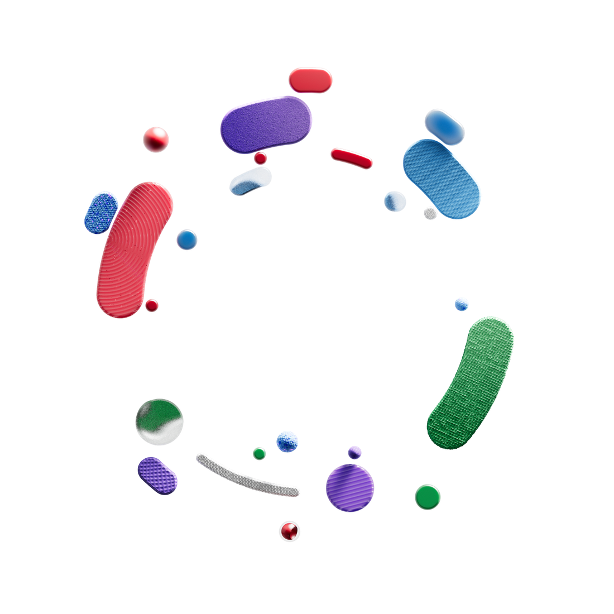
Сколько будет корень из двух?
Так учится любая нейросеть
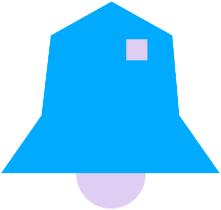
Попробовала
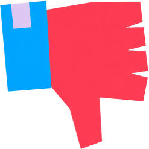
Промахнулась
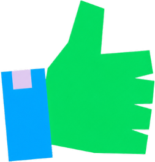
Подвинулась ближе
ИИ-кружок
от Авито
Работай с данными, обучай модели и решай олимпиадные задачи вместе с действующими ML-инженерами и специалистами по ИИ в Авито
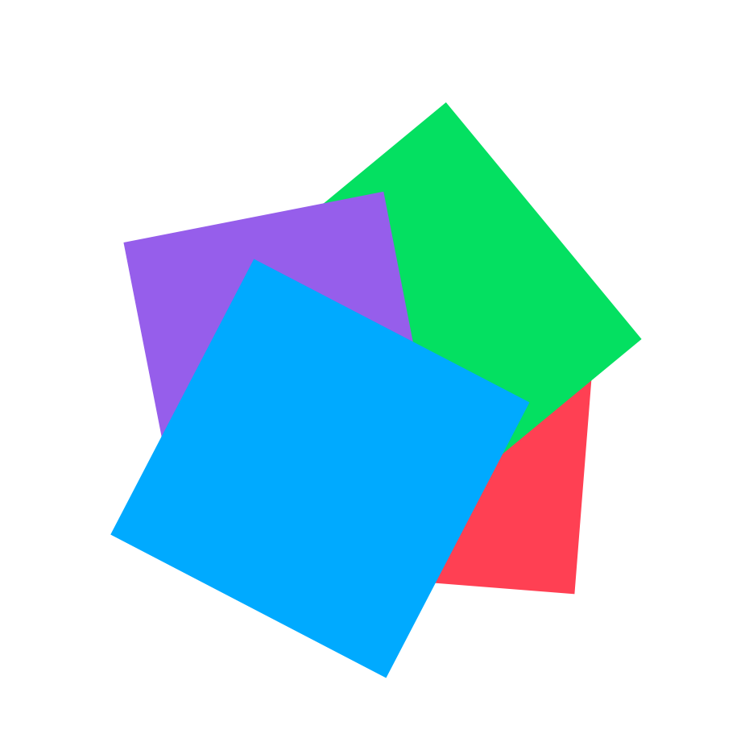
Бесплатно Обучение до 2-х лет 3 школы-партнёраЧто тебя ждёт
Разбор решений с инженерами
Наши эксперты поделятся опытом и помогут разобраться с основными вопросами
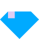
Защита своих решений
Объясняй ход мысли, сравнивай подходы и обсуждай решения с преподавателями и участниками
Участие в сборах и интенсивах
Командные задачи и другие активности — чтобы больше практиковаться, общаться и заводить новых друзей
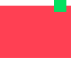
Выход за рамки кружка
При поддержке Авито участники смогут ездить на олимпиады, конференции и другие мероприятия
Подойдёт ученикам
9–11 классов, желающим углубиться в машинное обучение
Знакомым с Python, комбинаторикой и теорией вероятностей
Интересующимся олимпиадами по ИИ
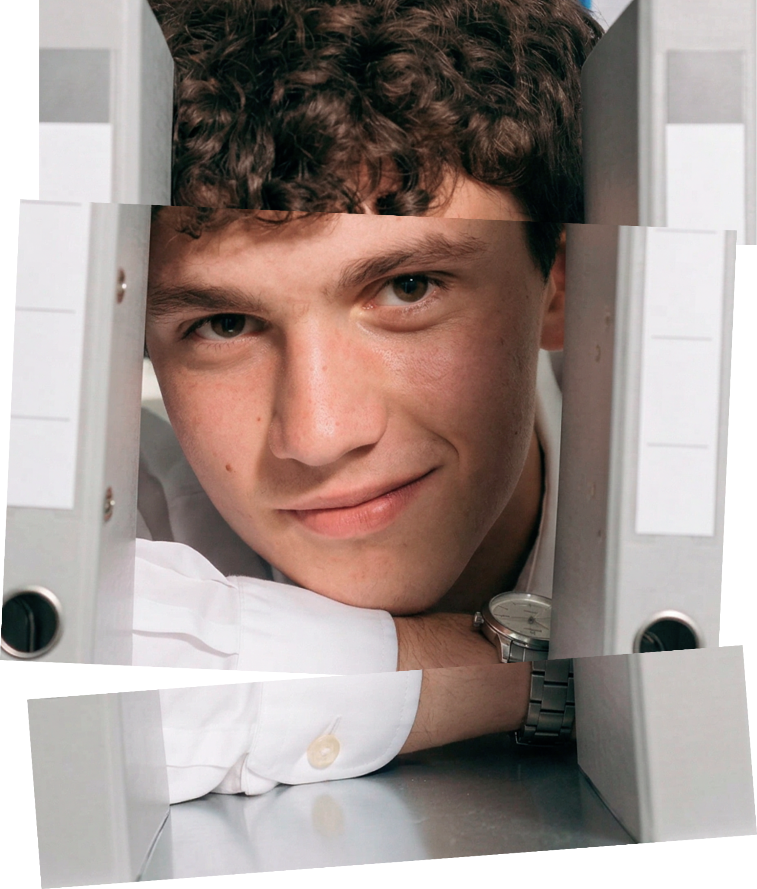
Что узнаешь на занятиях
1
Математика для ML
Производные, градиентный спуск и основы обучения моделей
2
Работа с данными
EDA, поиск закономерностей, очистка и подготовка датасетов
3
Классический ML
Регрессия, классификация, кластеризация, деревья решений и ансамбли
4
Нейросети
Механика нейросетей, PyTorch и первые модели
5
Современный ИИ
Компьютерное зрение, генерация контента и задачи продвинутого уровня
Как проходит обучение
1.
Бесплатно
Участие в ИИ-кружке бесплатное
2.
Продолжительность
Для учеников 9–10 классов — 2 учебных года, для 11-классников — 1 год
3.
6–7 часов в неделю
2 занятия по 1,5 часа и 3–4 часа — на самостоятельную работу
4.
Преимущественно очно
Занятия проходят в школах-партнёрах. Иногда встречаемся онлайн
5.
Сборы и другие активности
Командные проекты, защита решений, много практики и встречи в офисе Авито
Как попасть?
1.
Подай заявку до 20 сентября
Заполни анкету с указанием контактной информации и с навыками, где потребуется указать текущие знания
2.
Пройди тестирование 23 сентября
Пройди очный тест по Python и математике в школе
3.
Получи приглашение на кружок 25 сентября
Пригласим тех, кто успешно справился с тестом, или вернёмся с обратной связью
Подать заявку
Кто это рассказывает
Бэкенд-разработчик на golang · Инфраструктура Авито
Иванин Виталий
Окончил магистратуру МФТИ на ФПМИ, кафедра компьютерной лингвистики, в 2022 году
Активно применяю ИИ в работе, pet-проектах и хобби
А ещё я фанат хороших книг, манги, аниме и мастер по D&D — для своих партий применяю, в том числе, генеративные модели
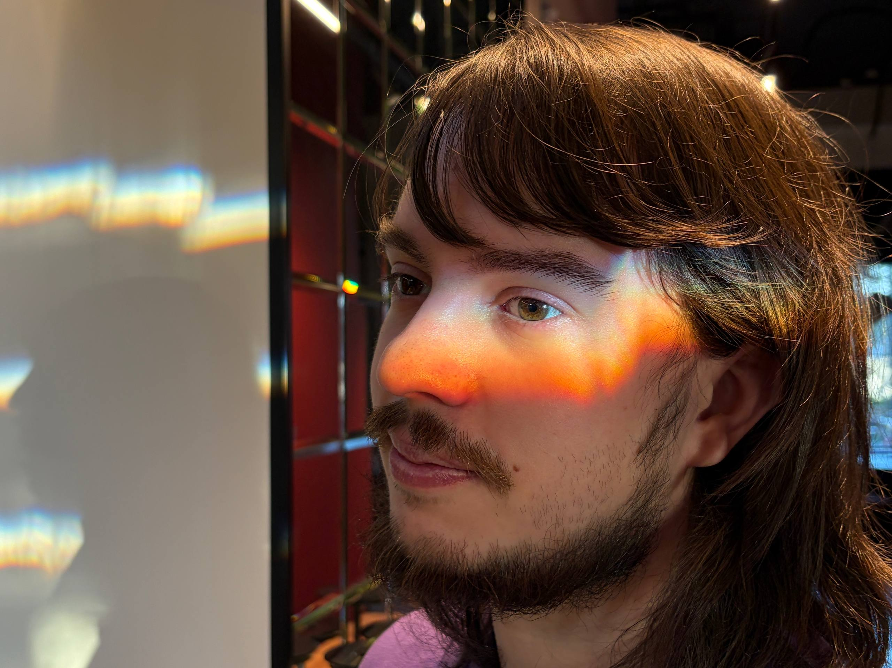
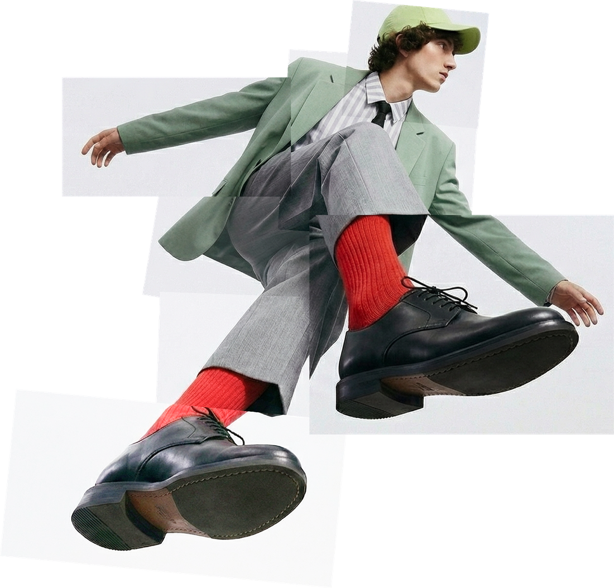
О чём поговорим
1.
Как модель учится рисовать
2.
ComfyUI: вершины и рёбра графа
3.
Делаем мем — вживую
4.
Собираем страницу манги
Что происходит при обучении
ComfyUI:
вершины и рёбра графа
01
Что такое ComfyUI
- Открытый интерфейс к генеративным моделям — Flux, Stable Diffusion и другим
- Работает локально: картинки никуда не уходят
- Воркфлоу — обычный
.json: перетащил файл — схема собралась - Бесплатно, без подписок и лимитов
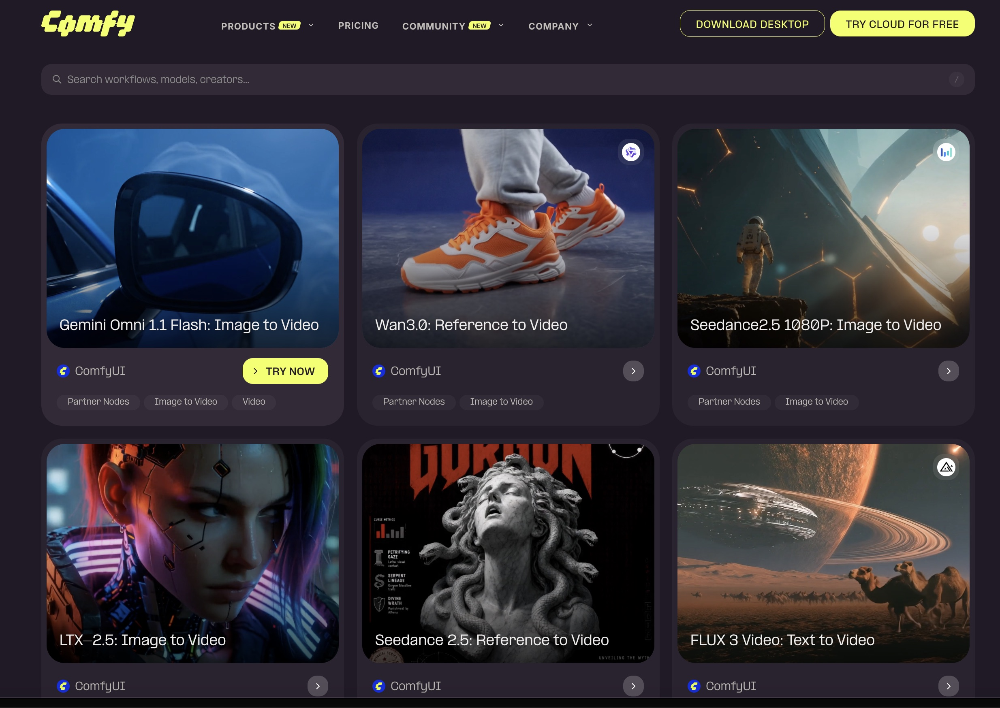
Как поставить себе домой
- Stability Matrix сам скачает ComfyUI
- Внутри ComfyUI — Manager для моделей
- Всё считается на своей видеокарте
Инструкция и оба воркфлоу
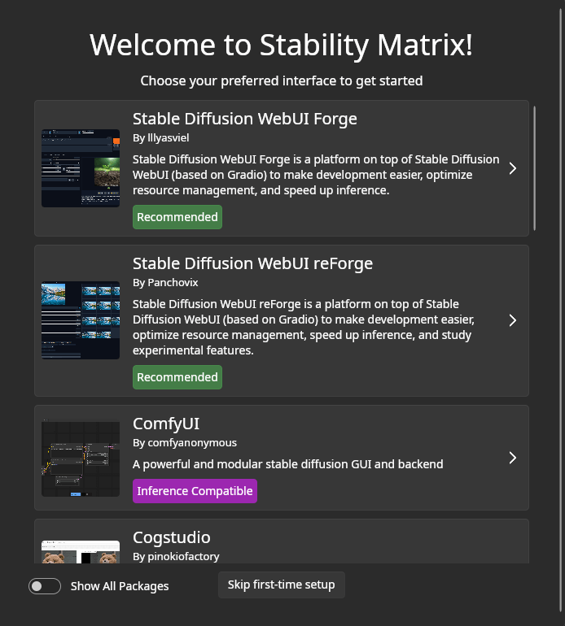
Графы обработки данных в Comfy UI
Вершина графа
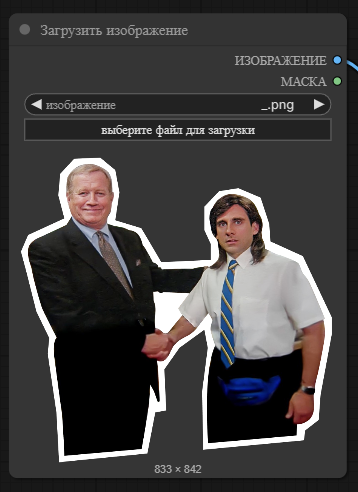
- Название
- Настройки
- Вход слева, выход справа
Рёбра графа
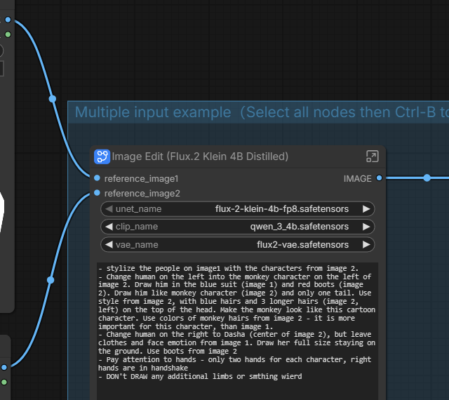
- Связывают данные между вершинами
- Одни и те же данные можно направить во множество вершин одновременно

Преобразователь мемов — всего 4 вершины!
Что внутри модели
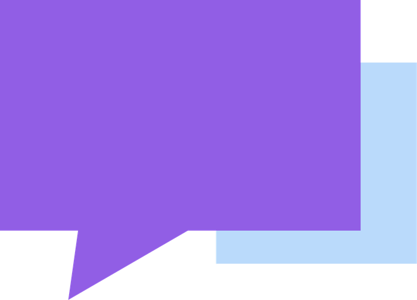
Переводчик
TextEncoder (
qwen_3_4b) — превращает текст в числа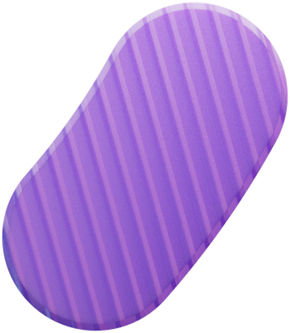
Художник
Diffusion Model (
flux-2-klein-4b) — основной генератор картинки (в виде чисел)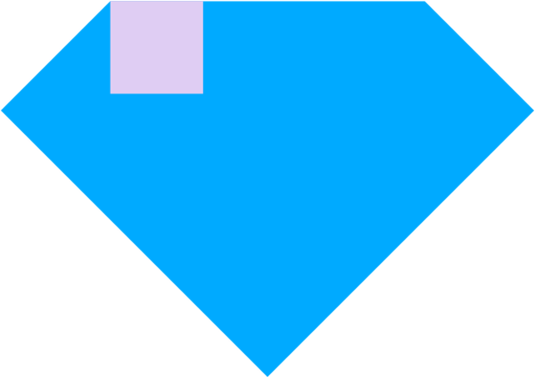
Проявитель
VAE (
flux2-vae) — преобразователь численного представления в полноценную картинку (и наоборот)Откуда берутся модели
.safetensors, несколько гигабайт- Качаются с HuggingFace
- Каждый файл — в свою папку
Основной файл модели:
Остальные файлы:
flux-2-klein-4b-fp8.safetensorsОстальные файлы:
Comfy-Org/vae-text-encorder-for-flux-klein-4b
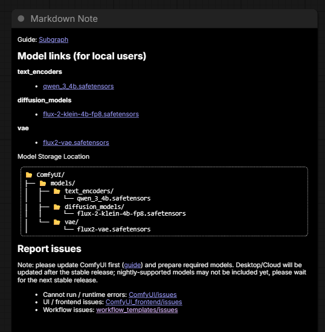
Подграф
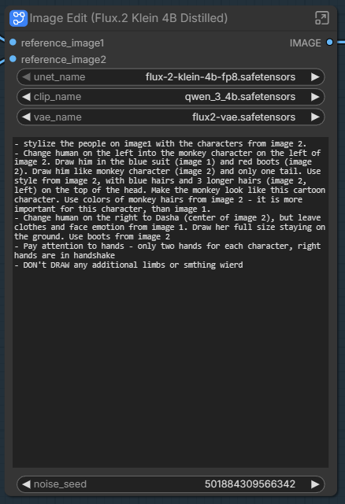
17
вершин спрятано внутри этой одной
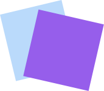
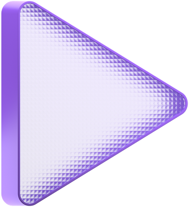
Покажем в ComfyUI
Что сейчас на экране
1
Перетаскиваем
.json в окно2
Две картинки
3
Промпт по пунктам
4
Run
5
Забираем из
output/А теперь —
целая страница манги
02

1440 × 2032
Из чего она собрана
01
Референсы
Персонажи и стиль задаём картинками
02
Генерируем три кадра
Каждый отдельно, своей частью графа
03
Реплики
Вторым проходом добавляем каждому кадру реплику персонажа
04
Страница
Склеиваем три кадра на белом фоне
Приём 1: поза с фотографии
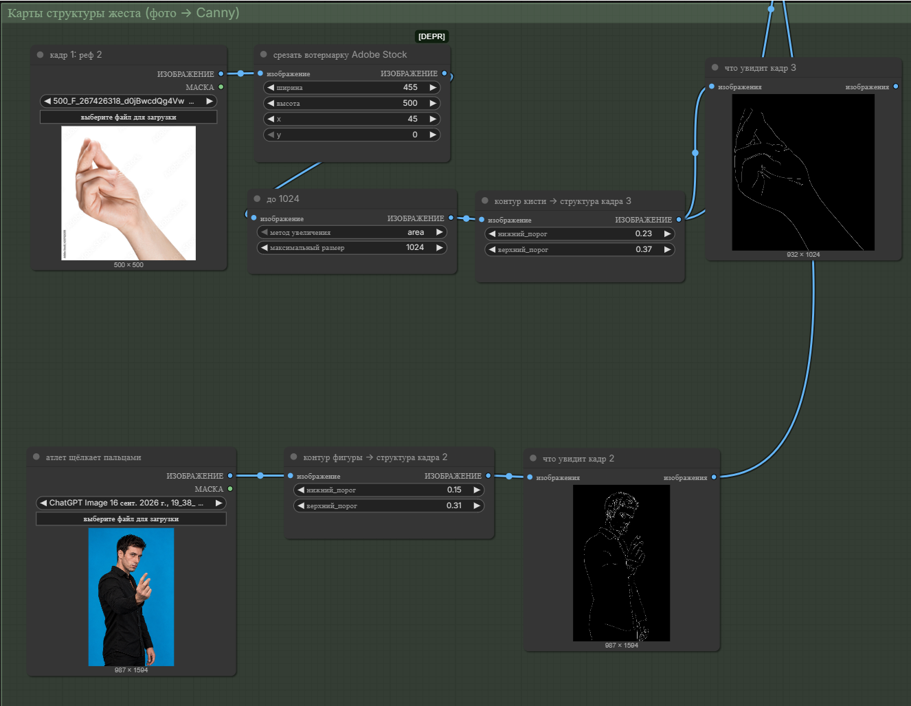
- Фото → контур (Canny)
- Модель принимает на вход силуэт и применяет его к персонажу
Приём 2: лицо отдельно от рук
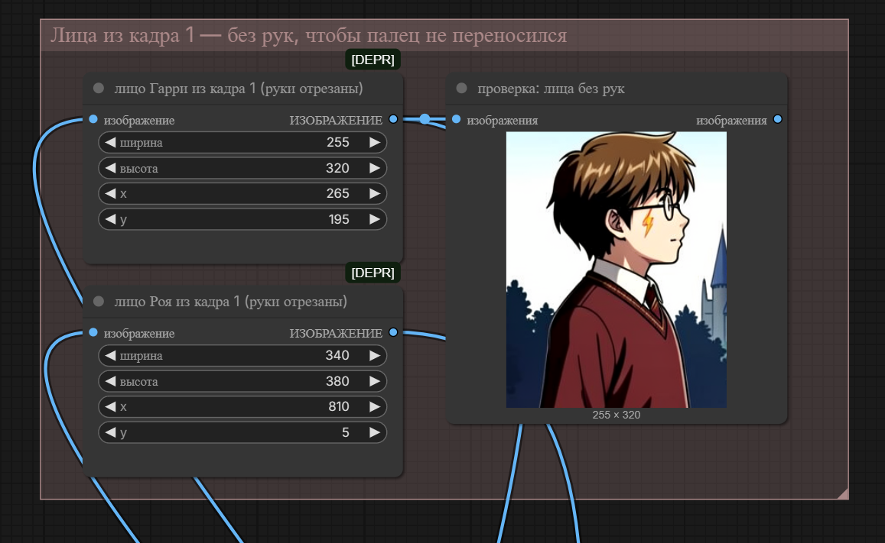
- Вырезали только лицо
- Иначе могут быть галлюцинации — например копирование позы или жестов из этого входа
Приём 3: реплики вторым проходом
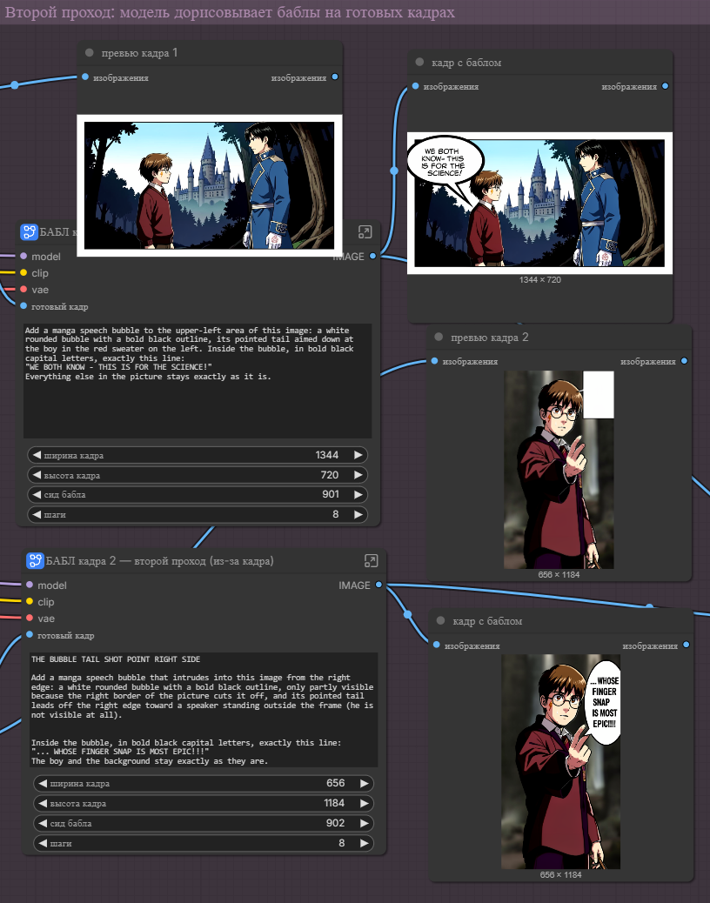
- Сначала генерируем чистый кадр
- Потом сверху дорисовываем реплику
Приём 4: сборка страницы
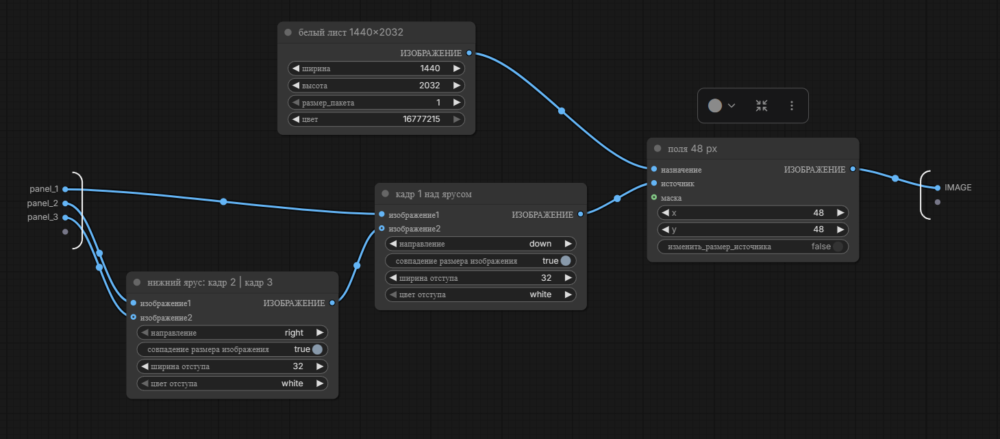
- Лист 1440×2032
- Отступ 32 px, поля 48 px
Мем и страница манги
5
вершин
40
вершин
5 групп · 4 сабграфа · 62 ребра
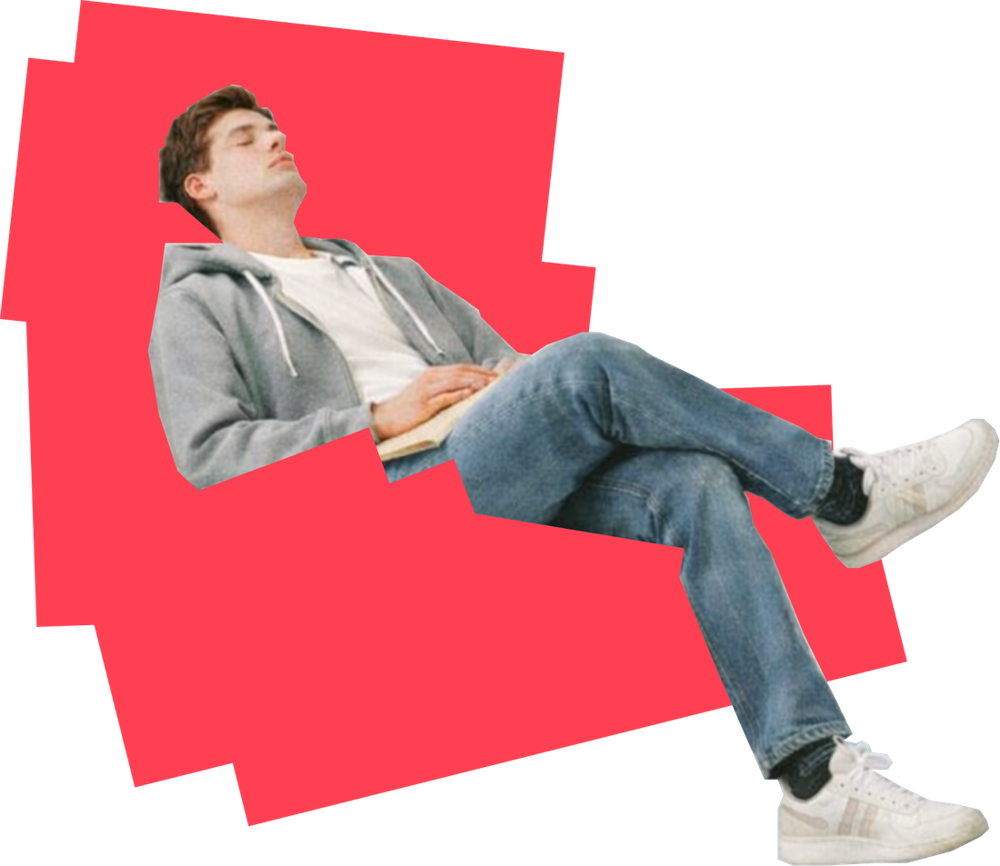
На это ушёл вечер
Промпты переписывались, кадры перезапускались, у Гарри пару раз вырастала лишняя рука.
Честно о границах
Пока выходит плохо
- Мелкие детали (например жесты) — лучше передавать отдельными картинками или силуэтами
- Надписи могут галлюцинировать — лучше накладывать алгоритмом или вручную
- В целом качество локальных моделей на слабом железе сильно уступает облачным
Так делать нельзя
- Использовать чужие фото без разрешения
- Генерация запрещённого контента
- Дипфейки (выдавать генерацию за настоящее фото)
«С великой силой приходит великая ответственность» — Бен Паркер (с)
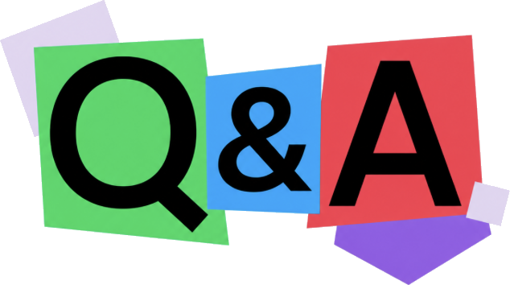
Презентация, оба воркфлоу и инструкция